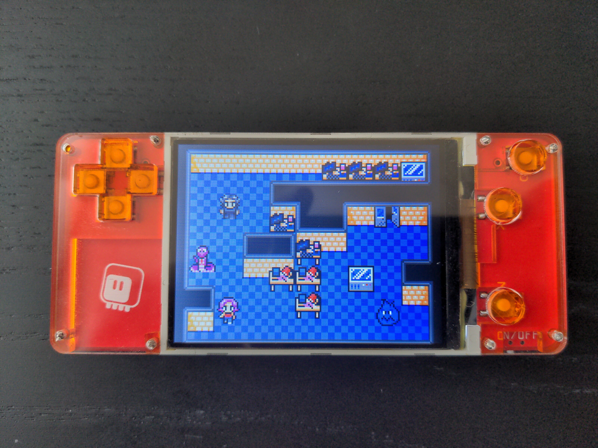
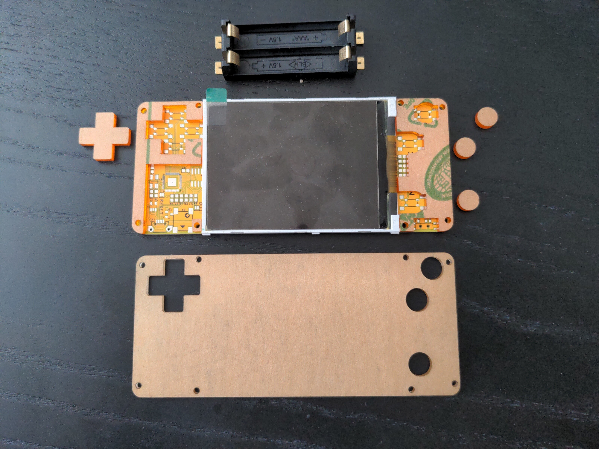

A Case¶
Published on 2022-08-18 in PewPew S3.
Because I’m working on the RP2040 version of this, together with the PCBs I also ordered a laser-cut case in the same style as the PewPew M4 has. And since the dimensions are the same, the case also fits this board, so I now have a nicely encased console:
The button caps are right now still on small pieces of two-sided tape, stuck to the buttons, but I plan to design two stickers that would go on the bottom of the transparent plate, sticky side up, to mask the display and also keep the caps in place.
The case is basically two layers of laser-cut acrylic:
In this prototype I made the holes for the screws in the transparent plate a bit too large, so I had to use bigger screws and insert pieces of wire into the holes for the thread to catch properly, but that is something easily fixed in the next version.
There is no case on the back. The new board has its back completely clean (except for the battery holder), so it wouldn’t make much sense, and anyways it wouldn’t fit this board, because it uses more batteries and has the speaker and the microccontroller board on the back.
It still improves the convenience and looks.